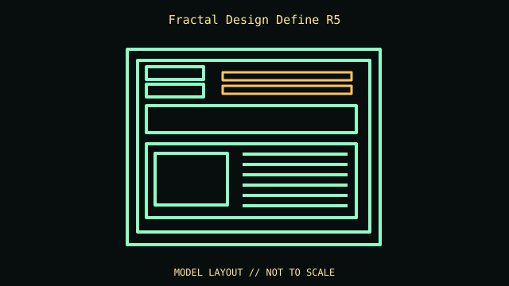

[ IDENTIFIED ENCLOSURE // ATX SOUND-DAMPENED MID-TOWER ]
Fractal Design Define R5
232 × 462 × 531 mm (W × H × D); ATX sound-dampened mid-tower. Board fit: ATX, microATX and Mini-ITX; seven expansion slots. GPU: 310 mm with the upper drive cage installed; up to 440 mm with the cage removed. CPU cooler: 180 mm maximum CPU-cooler height. Radiator: Front up to 360 mm, top up to 420 mm, bottom up to 240 mm and rear up to 140 mm; verify fan/radiator stack and top memory/VRM clearance. PSU: ATX PSU, up to 300 mm in the published fit (shorter unit simplifies cabling and cage use).

REVISION / CONFIGURATION CAVEAT: The 310 mm GPU figure assumes the drive cage remains; remove/reposition cages only as the manual specifies. Define R5 is not the later R6 or Define 7.
Mechanical specifications and fit
| Exact model | Fractal Design Define R5 — ATX sound-dampened mid-tower. |
|---|---|
| Dimensions and construction | 232 × 462 × 531 mm (W × H × D); see cited manufacturer page/manual for measured envelope and revision-specific detail. |
| Motherboard form-factor fit | ATX, microATX and Mini-ITX; seven expansion slots. |
| GPU clearance | 310 mm with the upper drive cage installed; up to 440 mm with the cage removed. |
| CPU-cooler clearance | 180 mm maximum CPU-cooler height. |
| Radiator clearance | Front up to 360 mm, top up to 420 mm, bottom up to 240 mm and rear up to 140 mm; verify fan/radiator stack and top memory/VRM clearance. |
| PSU clearance | ATX PSU, up to 300 mm in the published fit (shorter unit simplifies cabling and cage use). |
| Drive mounts | Two external 5.25-inch bays, eight modular 3.5/2.5-inch trays, and two dedicated 2.5-inch mounts. |
Compatibility and service notes
Keep the ModuVent roof covers, filters and movable drive cages with the case. A top radiator can compete with tall memory and board heatsinks.
- Check GPU length and thickness, its power-plug bend, cooler height and radiator/fan assembly against the same installed configuration; advertised maxima may conflict.
- Confirm motherboard standoffs match the board holes and inspect front-panel, USB and fan-controller headers before powering the build.
- Record the exact SKU, manual revision, removed brackets and unused drive hardware. Measure the individual chassis before shipping or fitting nonstandard parts.
Manufacturer and manual sources
- Fractal Design Define R5 — manufacturer product specificationsManufacturer product/model page; use the SKU and configuration that match the specimen.
- Fractal Design — Define R5 product manual and installation diagramsModel-specific installation/manual reference for mounting diagrams and configuration limits.
Clearance limits describe separate manufacturer fit conditions; they are not a promise that all maximum-size parts fit simultaneously. Confirm the exact revision before purchase or installation.